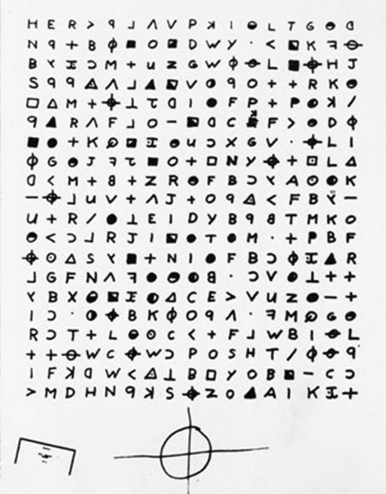

On August 1, 1969, three letters prepared by the killer were received at the Vallejo Times Herald, the San Francisco Chronicle, and The San Francisco Examiner. The nearly identical letters—subsequently described by a psychiatrist to have been written by "someone you would expect to be brooding and isolated"—took credit for the shootings at Lake Herman Road and Blue Rock Springs. Each letter also included one-third of a 408-symbol cryptogram which the killer claimed contained his identity. The killer demanded they be printed on each paper's front page or he would "cruse [sic] around all weekend killing lone people in the night then move on to kill again, until I end up with a dozen people over the weekend."
